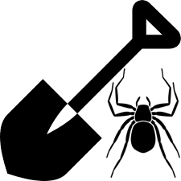
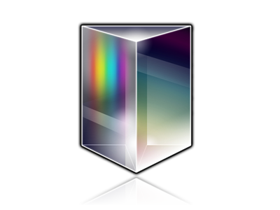

 LSLOD - PhLeGrA Miner
PhLeGrA - Linked Graph Analytics in Pharmacology
VisIOn - Visualizing user Interactions with Ontologies
BiOnIC - Biomedical Ontologies Interaction Catalogue
Ontology Term Overlap and Reuse
Presence Ontology
An Ebola Virus-centered Knowledge Base
ReVeaLD - Real-time Visual Explorer and Aggregator of Linked Data
M3CRNN - Predicting MGMT methylation from MRI scans
 PRISM - Passive Real-time Information for Sensing Mental Health
GenomeSnip - Fragmenting the Genomic Wheel


 VisIOn - Visualizing user Interactions with Ontologies
VisIOn - Visualizing user Interactions with Ontologies